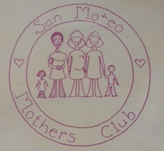

An Array of Values
January 17, 2015
Jeanine Loughlin
Thinking of the times in my life when I have been the happiest, proudest, and most satisfied the one that has a domino effect on values is 'having a family'. When I became a parent, actually held my baby in my arms, I realized there was a new person on this earth that I was responsible for. As we left the hospital I hesitated and wondered, where is the manual for being a parent and raising a child? I need instructions, guidelines, advice. But there isn't a manual. YOU make the manual. During my pregnancy I did my best to prepare for parenthood. I read several books, talked to family and friends and did my best to comprehend what having a family would involve. But until the doctor hands your child to you for the first time the reality doesn't hit. And at the moment it occured to me I would use my values as a resource to make what I hoped would be the better parenting decisions. Those values encompassed many from the list provided by Devbootcamp for this exercise. The first being a commitment followed by affection, accountability, compassion, challenge, fairness, leadership, confidence, wisdom, community, stability, openess, health, activism, growth. And really I could just make an Array 'having a family' and fill it with the entire list of values. And in the end you walk away with knowledge. Because having a family is about learning to parent your child by using your values as a foundation.
I watched my child grow, develop, explore the world, and especially learn. Early on, among many things we made frequent trips to the parks. One day I met another mom who told me about this mother's club that was being formed geared towards parenting, the community, and our children. We had shared our observation that new parents don't have avenues for connecting with each other and our kids with other kids. So I became one of the first members of the San Mateo Mother's Club. We had by-laws, a board, a president, etc... and met formally once a month where we had guest speakers (the superintendent of schools, politicians, child health advocates, and more). And we had playgroups that met each week at homes, parks, and for group outings. A main focus was our responsibility in the education of our children because we knew the schools and the system in general was broken. We were non-profit but since we did pay some of our speakers, we had fundraisers. Early on we had made a selection from member submissions for our club logo. My logo was chosen. We put it on, among other things, t-shirts (so for park days and outings, all the kids were easy to identify for head-counts) and to help new parents find us and join. We composed and sold a cookbook to pay our costs for a monthly newsletter and incidentals. The kids thrived and we all learned as we grew. There were bumpy moments but that's all part of any commitment.
One of the by-laws stipulated the club was open to parents of children 0-5 years of age. So when your (last) child was five you would be moving into a whole new phase and out of the mother's club. Kids would be entering school at that point. That was bittersweet. But we filled our kids first few years with great activities. And I made the most of my years in the mother's club. I was on the newsletter staff, elected president for a one year term, scheduled many terrific speakers and gained better parenting and life skills. And then, after we left the club, one day, I was returning home from work. I exited the freeway onto the Third Avenue exit. As I was sitting at the red light and I looked over to a concrete slab at the entrance into San Mateo. In the concrete was encased round metal replicas of the state seal, the city seal, and there down and the end was my logo representing the San Mateo Mother's Club.Most people wouldn't notice or recognize it. But it reminded me of a happy, proud, satisfying moment and a time filled with gaining knowledge.